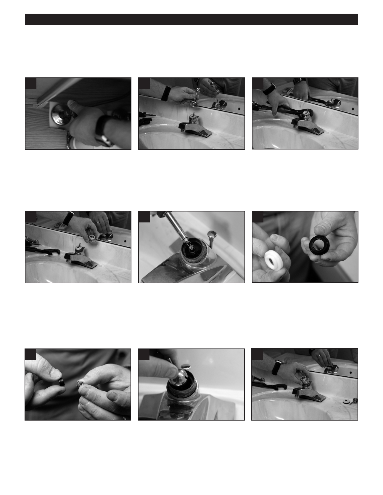

PA RT I C I PA N T R E S O U R C E G U I D E
Repairing a Ball-Type Faucet (continued)
How-to Steps
1
2
3
1. Shut off the water to the faucet.
2. Using an Allen wrench, remove the
3. Using a tongue and groove pliers,
handle setscrew.
unscrew the rounded top
• Tip: Wrap the pliers in masking
tape to prevent scratching on the
chrome top.
4
5
8
4. Remove the cam, cam washer,
5. Using a screwdriver, remove the
8. Remove the old O-rings and replace
and ball.
springs and valve seats from inside
them with the new greased O-rings.
the faucet.
9. Replace the spout.
6. Twist off the spout.
7. Cover the new O-rings with grease.
10
11
12
10. Put in the new springs and valve
11. Replace the ball (if needed) and the 12. Screw on the rounded top.
seats.
new cam washer and cam. (Set
cam notch into notch on spout.)
27